Info: Version 1.5.x is available.
Last modified: $Date$
TOMOYO Linux には、 CUI で動作するポリシーエディタが付属しています。
予め /proc/ccs/policy/manager に「editpolicy が動作するドメインのドメイン名」または「editpolicy へのパス名（通常は /root/ccstools/editpolicy ）」が登録されている必要があります。
シェルプロンプトから editpolicy と入力すると、ポリシーエディタを実行することができます。
ポリシーエディタを終了するには、「Q」キーを押します。
最新の情報に更新するには、「R」キーを押します。
カーソルを移動させるには「↑」「↓」キーまたは「PageUp」「PageDown」キーを押します。
横方向にスクロールさせるには、「←」「→」キーまたは「Home」「End」キーを押します。
検索を開始するには、「F」キーを押して、検索したい文字列を入力し、最後に「Enter」キーを押します。
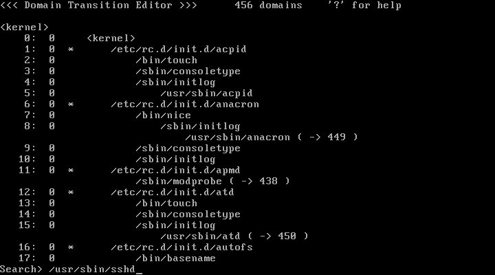
前回入力した文字列で順方向（下方向）に検索を続行するには、「N」キーを押します。
前回入力した文字列で逆方向（上方向）に検索を続行するには、「P」キーを押します。
ポリシーエディタには４つの画面があります。
| (1) ドメイン遷移一覧画面 |
| (2) システムポリシーの編集画面 |
| (3) 例外ポリシーの編集画面 |
| (4) ドメインに対するアクセス許可の編集画面 |
「Tab」キーを押すと(1)→(2)→(3)→(1)の順番で画面が切り替わります。
(1)の画面において「Enter」キーを押すと、(4)に切り替わります。
(4)の画面において「Enter」キーまたは「Tab」キーを押すと(1)に切り替わります。
ドメイン遷移一覧画面の例
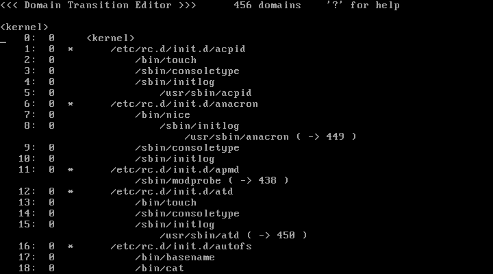
システムポリシーの編集画面の例
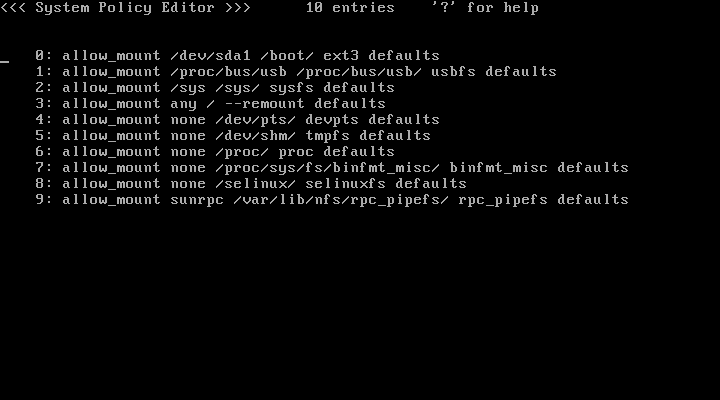
例外ポリシーの編集画面の例
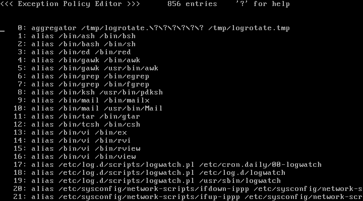
ドメインに対するアクセス許可の編集画面の例
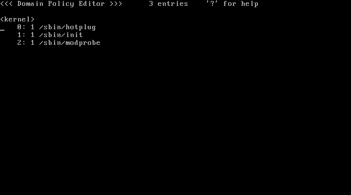
エントリを追加するには、「A」キーを押して、追加したい内容を入力し、最後に「Enter」キーを押します。入力した内容はヒストリに残っており「Insert」キーでヒストリの内容を確認できます。ヒストリの内容を呼び出すには「↑」「↓」キーを使います。
ドメイン遷移一覧画面の例
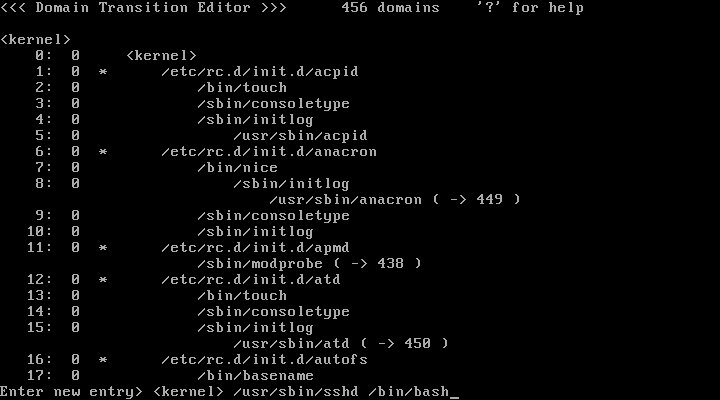
システムポリシーの編集画面の例
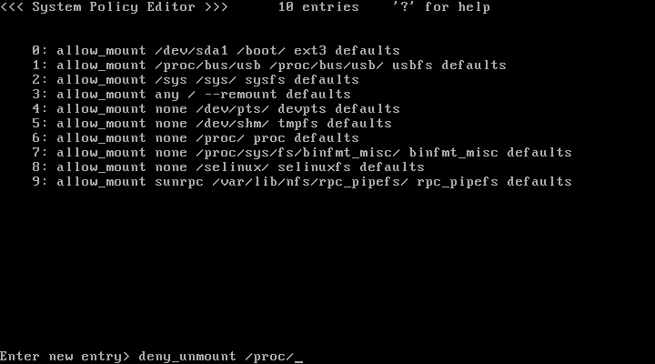
例外ポリシーの編集画面の例
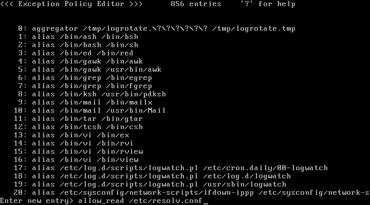
ドメインに対するアクセス許可の編集画面の例
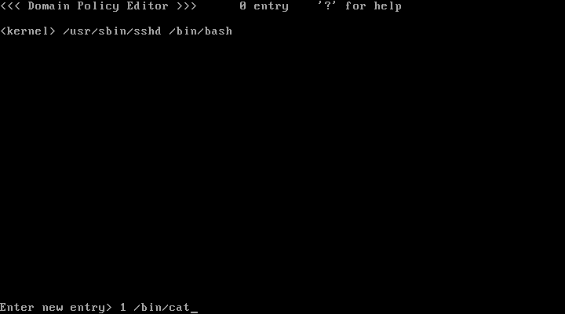
エントリを選択するには、選択したいエントリにカーソルを合わせて「スペース」キーを押します。選択されると行頭に「&」マークが表示されます。
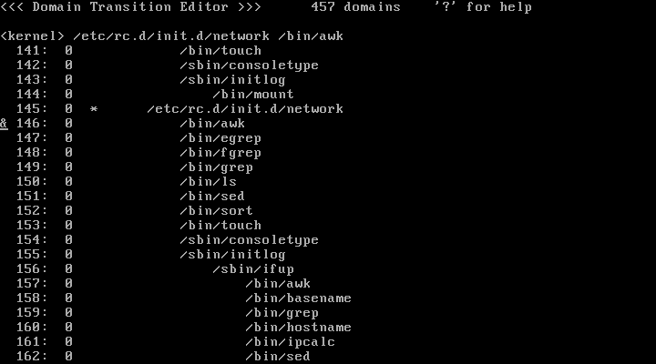
もう一度「スペース」キーを押すと選択解除されます。選択解除されると行頭の「&」マークが消えます。
「C」キーを押すと、カーソルのある行の選択状態（行頭の「&」マークの有無）がカーソル行以下の全エントリに複写されます。
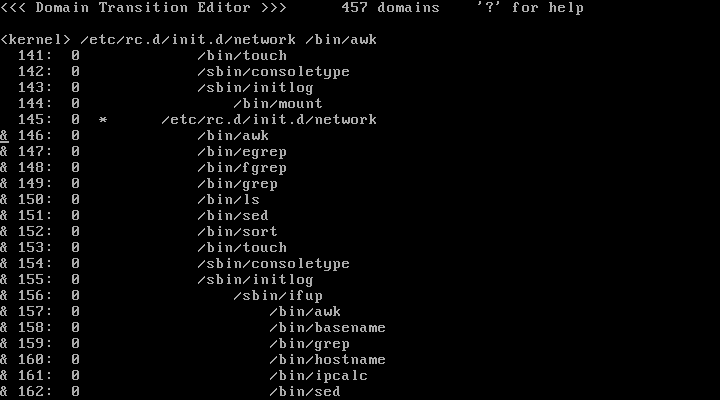
特定の範囲のみを選択するには、選択対象となる最初のエントリにカーソルを合わせて「&」マークを表示させてから「C」キーを押し、選択対象となる最後のエントリの次のエントリにカーソルを合わせて「&」マークを消してから「C」キーを押します。
削除したいエントリを１個以上選択してから「D」キーを押します。削除を確認するためのプロンプトが表示されるので、「Y」キーを押すと削除されます。
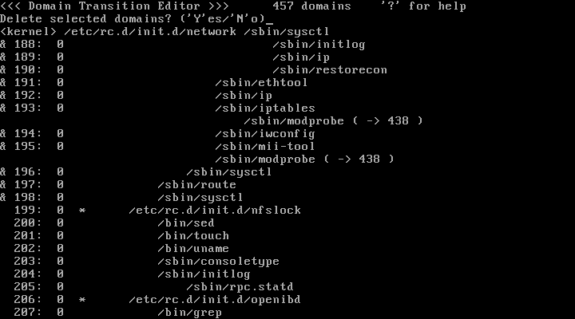
ドメイン遷移一覧画面では、インデント付きのツリー構造でドメイン遷移の一覧が表示されます。起こりうるドメイン遷移の組み合わせをこの画面で確認することができます。
「行番号」の右側には、そのドメインに割り当てられている「プロファイル番号」が表示されます。 プロファイル番号の右側には、そのドメインのドメイン名に含まれる最後の「プログラムのパス名」が表示されます。「プロファイル番号」と「プログラムのパス名」の間には、ドメインの属性に応じて「#」「*」「!」が表示される場合があります。
プロファイルの割り当てを変更したいドメインを１個以上選択してから「S」キーを押します。すると、プロファイル番号の入力を求めるプロンプトが表示されるので、プロファイル番号を入力し、最後に「Enter」キーを押します。
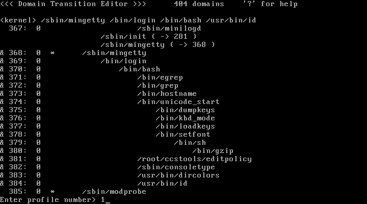
「!」マークが表示されているドメインは、 initialize_domain 構文または keep_domain 構文により到達できないドメインであることを示しています。到達できない理由が「プログラムのパス名」の右側に表示されます。
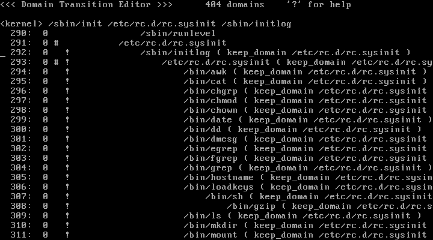
「*」マークが表示されているドメインは、 initialize_domain 構文により複数のドメインからこのドメインに遷移する可能性があることを示しています。「*」マークが表示されていないドメインはそのドメインの親ドメインからのみ遷移します。
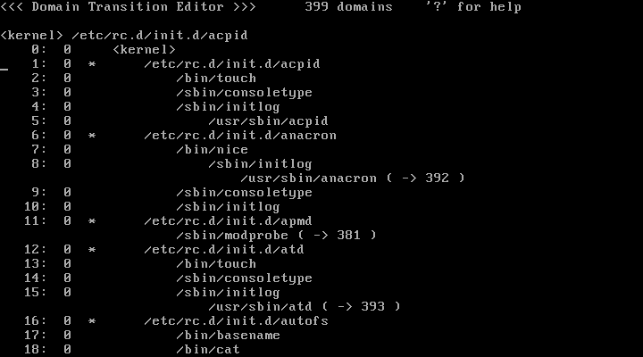
「#」マークが表示されているドメインは、 keep_domain 構文により複数のプログラムがこのドメインで動作する（プログラムを実行してもドメイン遷移が発生しない）可能性があることを示しています。
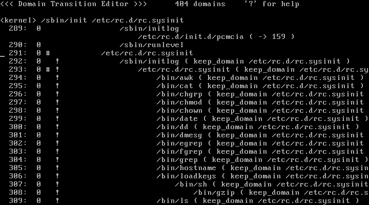
これは実際のドメインではありません。「プログラムのパス名」が initialize_domain 構文により指定されているために、親ドメインから実行されると「数字」が示す行番号のドメインへ遷移することを示しています。
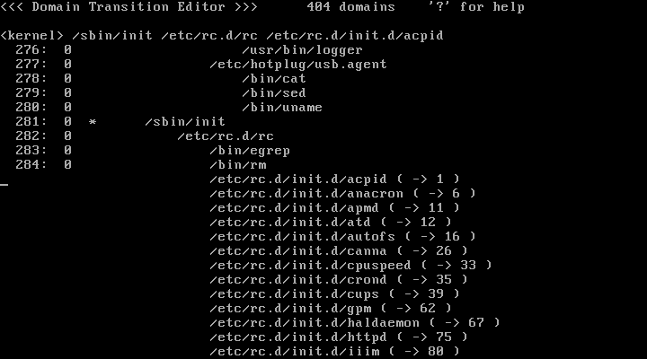
これは実際のドメインではありません。「プログラムのパス名」が initialize_domain 構文により指定されていますが、遷移先のドメインがまだ作成されていないことを示しています。
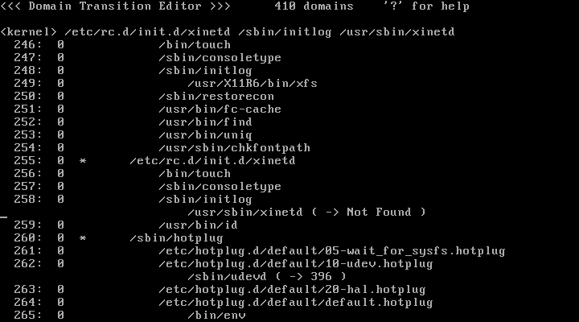
ドメインが削除されたなどの理由により、このドメインが存在していないことを示しています。インデントを崩さないようにするために、親ドメインが存在しないのに子孫ドメインが存在している場合にのみ表示されます。このドメインを作成するには、このドメインにカーソルを合わせて「Insert」→「A」→「↑」→「Enter」キーの順に入力してください。
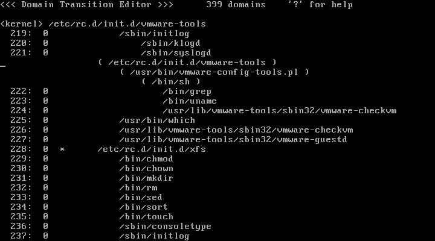
TOMOYO Linux では原則としてプログラムを実行する度にドメイン遷移を行うので、同じプログラムでも親ドメインが異なれば異なるドメインに属することになりますが、デーモンとして動作するプログラムの場合は親ドメインに関わらず同一のドメインで動作してくれる方が都合が良いことがあります。そのような場合は initialize_domain 構文と no_initialize_domain 構文を使うことで親ドメインに関わらず <kernel> 直下のドメインで動作させることができます。
例として、 /usr/sbin/sendmail.sendmail を常に <kernel> /usr/sbin/sendmail.sendmail ドメインで動作させる方法を示します。
initialize_domain を指定する前は以下のように複数のドメインで同一のプログラムが実行されています。
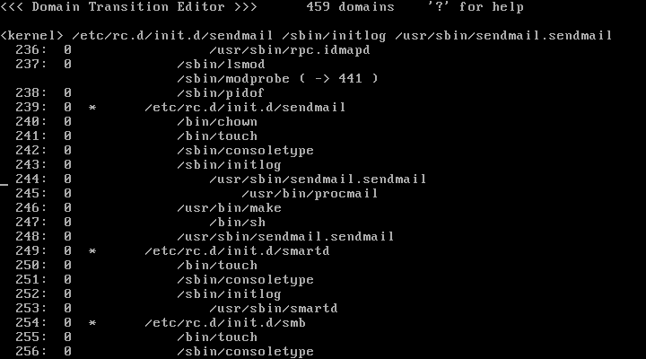
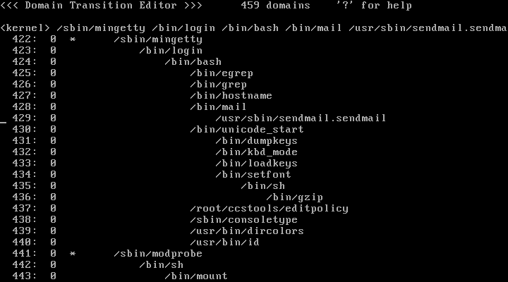
例外ポリシー編集画面に切り替えて、「A」キーを押してから initialize_domain /usr/sbin/sendmail.sendmail と入力し、「Enter」キーを押します。これは、 /usr/sbin/sendmail.sendmail が実行された場合には <kernel> /usr/sbin/sendmail.sendmail ドメインへ遷移するということを意味します。
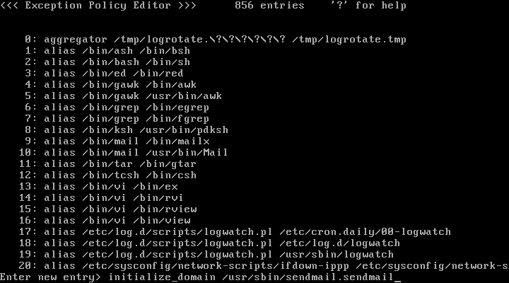
その後、ドメイン一覧画面に戻ると、既に作成されたドメインに「!」マークが現れています。さらに、遷移先である <kernel> /usr/sbin/sendmail.sendmail ドメインがまだ作成されていないので「（-> Not Found）」という表示も現れています。
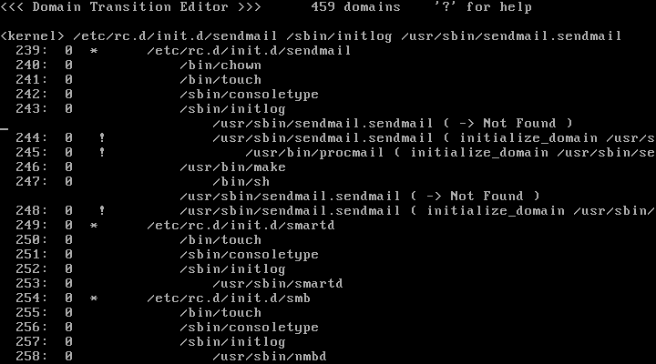
「（-> Not Found）」という表示を消すために、「A」キーを押して <kernel> /usr/sbin/sendmail.sendmail と入力し、「Enter」キーを押します。
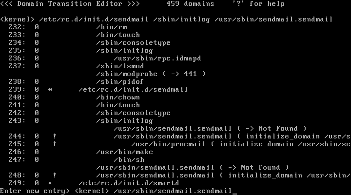
すると、「（-> Not Found）」という表示は遷移先の行番号に変化しました。
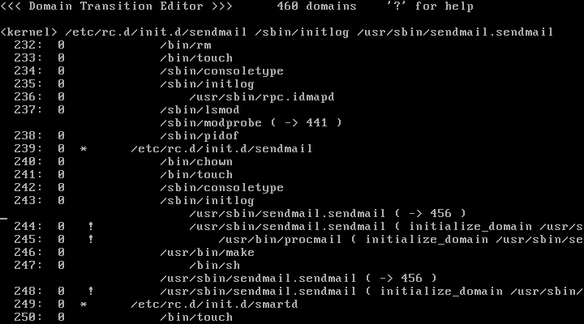
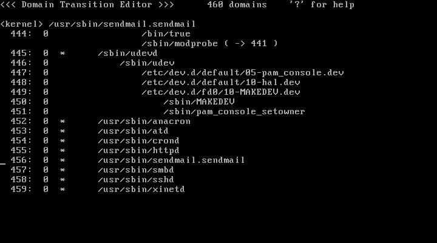
しかし、 /bin/mail から /usr/sbin/sendmail.sendmail が実行される場合はデーモンとして動作させるわけではないため、 <kernel> /usr/sbin/sendmail.sendmail ドメインへ遷移させたくないと考えるかもしれません。
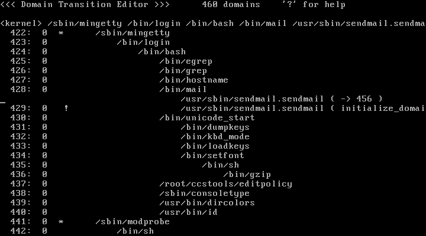
そのような場合、例外ポリシー編集画面に切り替えて、「A」キーを押してから no_initialize_domain /usr/sbin/sendmail.sendmail from /bin/mail と入力し、「Enter」キーを押します。これは、ドメイン名が /bin/mail で終わるドメインから /usr/sbin/sendmail.sendmail が実行される場合には <kernel> /usr/sbin/sendmail.sendmail ドメインへ遷移させないということを意味します。
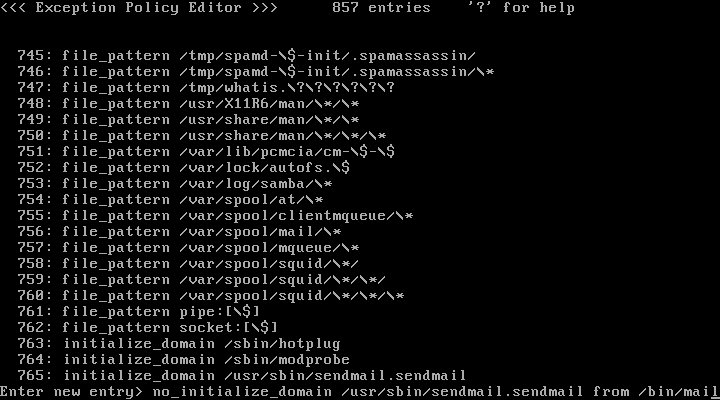
ドメイン一覧画面に戻ると、 /bin/mail から実行される /usr/sbin/sendmail.sendmail には「!」マークが消えていることを確認できます。
TOMOYO Linux では原則としてプログラムを実行する度にドメイン遷移を行いますが、 keep_domain 構文と no_keep_domain 構文を使うことで不要なドメイン遷移を抑制できます。
例として、コンソールからログインしたドメイン（<kernel> /sbin/mingetty /bin/login /bin/bash）ではドメイン遷移をさせないようにする方法を示します。
keep_domain を指定する前は以下のようなドメイン遷移が発生しています。
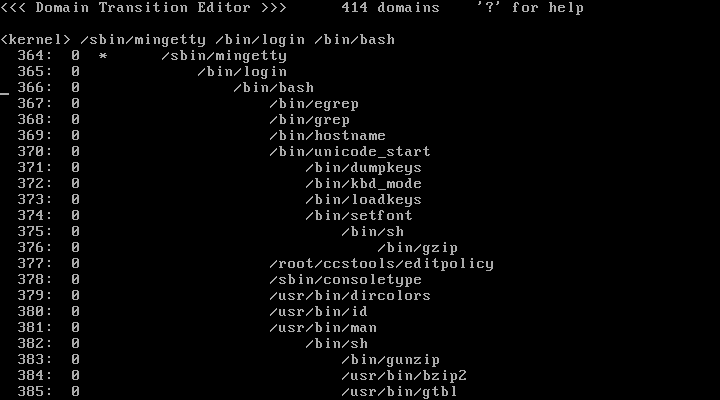
例外ポリシー編集画面に切り替えて、「A」キーを押してから keep_domain <kernel> /sbin/mingetty /bin/login /bin/bash と入力し、「Enter」キーを押します。
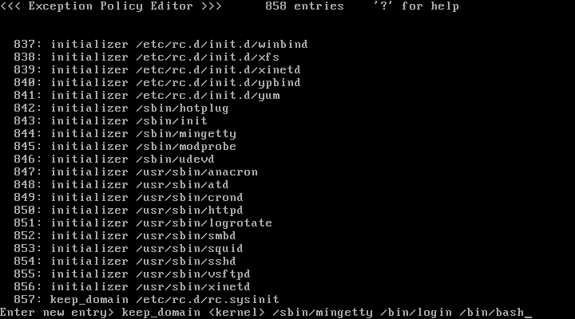
その後、ドメイン一覧画面に戻ると、 <kernel> /sbin/mingetty /bin/login /bin/bash ドメインの行に「#」という表示が現れ、その子孫ドメインには「!」という表示が現れます。
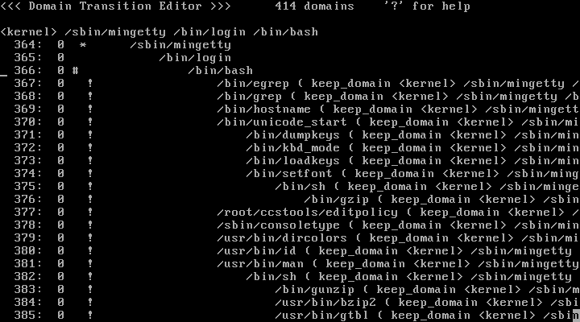
ログインしてから man コマンドを実行していますが、 man コマンドは複雑な処理をするので別ドメインで動作させることにします。
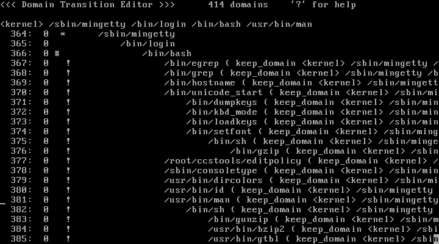
例外ポリシー編集画面に切り替えて、「A」キーを押してから no_keep_domain /usr/bin/man from /bin/bash （または no_keep_domain /usr/bin/man from <kernel> /sbin/mingetty /bin/login /bin/bash）と入力し、「Enter」キーを押します。
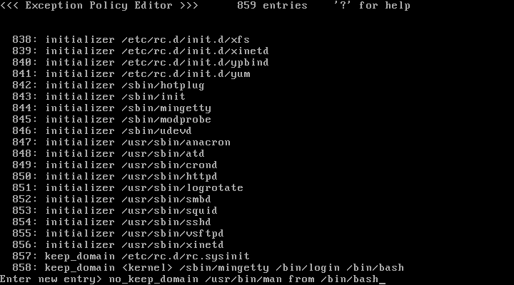
その後、ドメイン一覧画面に戻ると、 <kernel> /sbin/mingetty /bin/login /bin/bash /usr/bin/man ドメインとその子孫ドメインから「!」という表示が消えました。
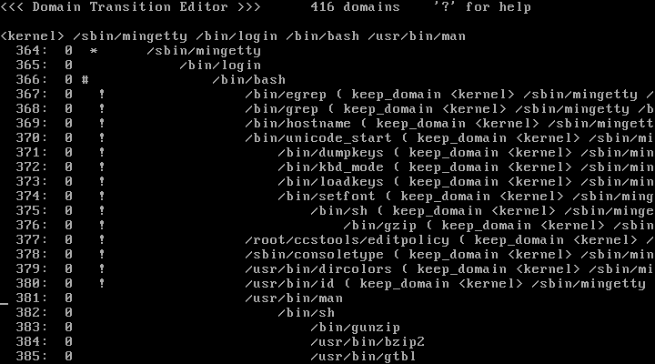
/usr/bin/man コマンドからいくつかのコマンドが実行されていますが、これらはドメイン遷移させる必要が無いので、ドメイン遷移をさせないことにします。例外ポリシー編集画面に切り替えて、「A」キーを押してから keep_domain /usr/bin/man（または keep_domain <kernel> /sbin/mingetty /bin/login /bin/bash /usr/bin/man ）と入力し、「Enter」キーを押します。
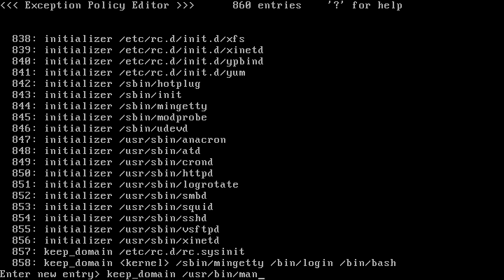
その後、ドメイン一覧画面に戻ると、 <kernel> /sbin/mingetty /bin/login /bin/bash /usr/bin/man ドメインの行に「#」という表示が現れ、その子孫ドメインには「!」という表示が現れます。
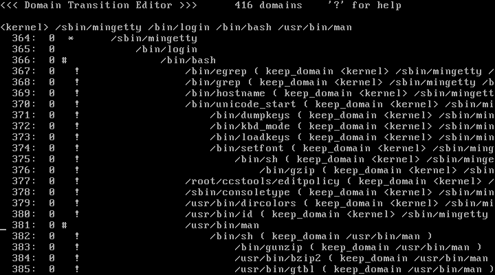
到達不能になったドメインは残しておいても無駄なので、削除することにします。「!」というマークが表示されている行を「スペース」キーを使って選択し、「D」キーを押してから「Y」キーを押すことで削除できます。
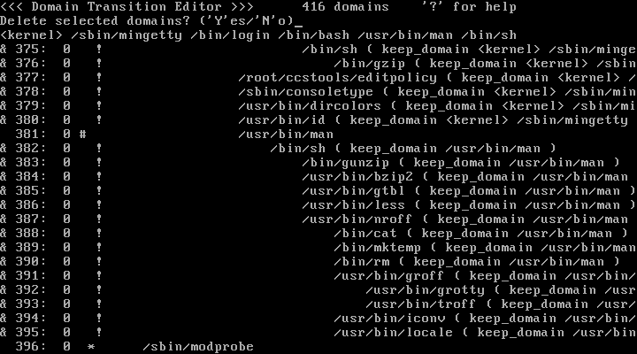
到達不能になったドメインの削除後は以下のようになります。
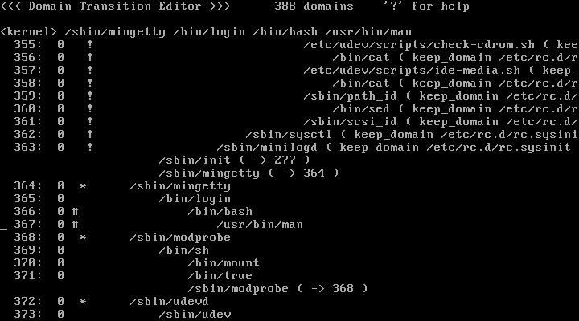
アクセス制限を行うことが目的である場合は、再度学習を行い、最後に強制モード用のプロファイルを割り当てることを忘れないでください。